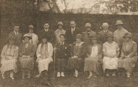

An early meeting of the society in the twenties
Concert Archive
Archive Index
Enjoy dusting the cobwebs off the records of old concerts which the society has performed:
Season: 2012 - 2013Season: 2011 - 2012
Season: 2010 - 2011
Season: 2009 - 2010
Season: 2008 - 2009
2012-2013 Season
| Date/Location | Performers | Works | Info |
|---|---|---|---|
| 4th May 2013 Haslemere Hall |
Orchestra and Chorus Conductor: James Ross |
Rossini: Overture: Il Barbiere di Siviglia Rossini: Villagers' Chorus: Guillaume Tell Donizetti: Chorus of Wedding Guests: Lucia di Lammermoor Gounod: Ballet Music: Faust Verdi: Anvil Chorus Mascagni: Intermezzo and Easter Hymn: Cavalleria Rusticana Puccini: Intermezzo: Manon Lescaut Wagner: Pilgrim's Chorus (Act I) and March (Act II): Tannhäuser Wagner: Prelude to Act III and Bridal Chorus: Lohengrin Wagner: Procession and Chorale: Act III: Die Meistersinger von Nürnberg |
|
| 2nd March 2013 Haslemere Hall |
Orchestra and Chorus Conductor: James Ross Soprano: Sara Wallander-Ross Mezzo Soprano: Cathy Bell Tenor: Arthur Swan Baritone: Jon Stainsby |
Mendelssohn: Elijah | Flyer Review |
| 16th February 2013 St Christopher's Church |
Come and Sing Conductor: Christopher Hann Organist: Clive Osgood |
Fauré: Requiem | |
| 8th December 2012 Haslemere Hall |
Orchestra and Chorus Conductor: James Ross Soprano: Helen May Tenor: Peter Mitchell |
Handel: Messiah (excerpts) Beethoven: Symphony No 6 Pastoral |
Flyer |
{kind=link}
{kind=link}
2011-2012 Season
| Date/Location | Performers | Works | Info |
|---|---|---|---|
| 5th May 2012 Haslemere Hall |
Orchestra and Chorus Conductor: James Ross Mezzo-Soprano: Katherine Marriott Tenor: Jonathan Stoughton |
Bizet: Scenes from Carmen Massenet: Ballet Music from Le Cid Falla: Danse Espagnole from La Vida Breve Falla: Suite No 1 from The Three Cornered Hat |
Flyer |
| 3rd March 2012 Haslemere Hall |
Orchestra and Chorus Conductor: James Ross Mezzo-soprano: Helen-Anne Gregory |
Elgar: The Music Makers Sibelius: Symphony No 3 Mendelssohn: Hebrides Overture |
Flyer Review |
| 3rd December 2011 Haslemere Hall |
Orchestra and Chorus Conductor: James Ross Soprano: Sara Wallander-Ross Mezzo-soprano: Marie Degodet Tenor: Arthur Swan Baritone: Leandros Taliotis |
Schumann: Symphony No 3 (Rhenish) Mozart: Requiem |
Review |
| 15th October 2011 St Christopher's Church |
Orchestra Conductor: James Ross 'Cello soloist: Anna Hunt |
Beethoven: Coriolan Overture Saint-saens: 'Cello Concerto No 1 in A minor Haydn: Symphony 104 |
{kind=link}
{kind=link}
2010-2011 Season
| Date/Location | Performers | Works | Info |
|---|---|---|---|
| 7th May 2011 Haslemere Hall |
Orchestra and Chorus Conductor: James Ross |
Verdi: Nabucco Overture and 'Va Pensiero' - Chorus of Hebrew slaves Rossini: Ballet music from William Tell Puccini: Messa di Gloria Elgar: Pomp and Circumstance March No 1 (chorus joining in for trio) Wood: Sea Songs (final section including hornpipe) Parry: Jerusalem (with chorus) |
Review |
| 5th March 2011 Haslemere Hall |
Orchestra and Chorus Conductor: James Ross Soprano: Rebecca Moon Baritone: Jon Stainsby |
Shostakovich: Festival Overature Schubert: Symphony No 8 Unfinished Brahms: German Requiem Osgood: Festival Cantata |
Flyer Review |
| 4th December 2010 Haslemere Hall |
Orchestra and Chorus Conductor: James Ross Violin: Jonathan Strange Cello: Lesley Shrigley Jones |
Brahms: Double Concerto J S Bach: Christmas Oratorio (excerpts) Beethoven: Overture “Egmont” and Carols with audience participation |
Flyer Review |
{kind=link}
{kind=link}
2009-2010 Season
| Date/Location | Performers | Works | Info |
|---|---|---|---|
| 8th May 2010 Haslemere Hall |
Orchestra and Chorus Conductor: James Ross Soprano: Susanna Hogan Saxaphone: David Wigram |
Mussorgsky: Night on a bare mountain Grieg: Peer Gynt: (Suites 1 and 2) Villa-Lobos: Fantasia for Soprano Saxophone and orchestra Holst: Short Festival Te Deum Haydn: Te Deum in C (Maria Theresa) Mozart: Kyrie |
Review |
| 6th March 2010 Haslemere Hall |
Orchestra and Chorus Conductor: James Ross Soprano: Jacqueline Dias Tenor: Stephen Brown Baritone: Jon Stainsby |
Haydn: The Creation | Flyer |
| 6th February 2010 St Christopher's Church |
Chamber Orchestra Conductor: James Ross Cello Soloist: Andrew Taylor |
Schubert: Overture, Rosamunde Haydn: Cello Concerto Beethoven: Symphony No 1 |
Flyer |
| 5th December 2009 Haslemere Hall |
Orchestra and Chorus Conductors: Tom Horn and Michael Veazey Soprano Soloist: Zita Tatrai |
Franck: Symphony Elgar: The Spirit of England Faure: Cantique de Jean Racine Concluding with, as part of the BBC project: Handel: The Hallelujah Chorus |
BBC: The UK Sings Hallelujah! |
| 26th September 2009 | Come and Sing | Puccini, Messa di Gloria |
{kind=link}
{kind=link}
2008-2009 Season
| Date/Location | Performers | Works | Info |
|---|---|---|---|
| 16th May 2009 Haslemere Hall |
Orchestra and Chorus Baritone: Jon Stainsby Leader: Tom Horn |
Elgar Suite no. 1: The wand of Youth Stanford/Tennyson: The Revenge Sullivan: In memoriam Elgar/Tennyson: There is sweet music; four choral songs Vaughan Williams Five Mystical Songs |
|
| 28th March 2009 Haslemere Hall |
Orchestra and Chorus Evangelist: Stephen Brown Soprano: Sara Jonsson Baritone: Jon Stainsby |
J S Bach: St John Passion | Flyer |
| 7th March 2009 Haslemere Hall |
Orchestra Conductor: James Ross Soloist: Dmitri Torchinsky |
Borodin: Overture, Prince Igor Sibelius: Violin Concerto in D minor Tchaikovsky: Symphony no 5 In E minor |
Flyer |
| 7th February 2009 St Christopher's Church |
Come and Sing | Vivaldi Gloria | |
| 6th December 2008 Haslemere Hall |
Orchestra and Chorus Treble: Henry Griffiths Baritone: Edward Cooke Leader: Tom Horn Organ: Michael Veazey |
Beethoven: 8th Symphony Vaughan Williams: Overture, The Wasps Fauré: Requiem |
{kind=link}
{kind=link}
2007-2008 Season
| Date/Location | Performers | Works |
|---|---|---|
| 10th May 2008 Haslemere Hall |
Orchestra and Chorus Tatyana: Sara Jonsson (soprano) Onegin: Maciek O'Shea (baritone) |
Sibelius: Karelia Suite Sibelius: The Captive Queen, op.48 Tchaikovsky: Eugene Onegin - Scenes |
| 1st March 2008 Haslemere Hall |
Orchestra and Chorus Flute: Emma Williams Tenor: Adam Tunnicliffe Baritone: Thomas West |
Wagner: A Faust Overture Poulenc: Flute Sonata (orch. L. Berkeley) Chaminade: Concertino for Flute and orchestra Berlioz: La Damnation de Faust (excerpts) |
| 8th December 2007 Haslemere Hall |
Orchestra and Chorus Soprano: Jeannette Gallant Mezzo Soprano: Nadia Bishara |
Weber: Overture Euryanthe Vivaldi: Gloria Bruckner: Psalm 150 Dvorák: Symphony No 8 |